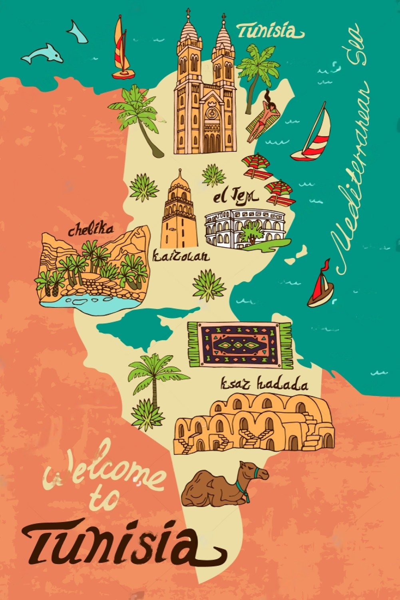

CHOOSING THE DESTINATION FOR YOUR VACATION IN TUNISIA
☰ Menu
Welcome to The jewel of Africa!
Experience the enchanting beauty of Tunisia, where ancient history meets modern culture. From the breathtaking ruins of Carthage to the golden sands of Hammamet, Tunisia offers a unique blend of Mediterranean charm, desert landscapes, and vibrant markets. Explore the bustling streets of Tunis, savor the flavors of traditional Tunisian cuisine. Yet, beyond its historical treasures, it's the warmth and hospitality of the Tunisian people that truly leave an indelible mark on visitors' hearts. They find themselves welcomed with open arms, enveloped in the genuine kindness and generosity that characterize Tunisian hospitality. Whether sharing stories over a traditional couscous meal or dancing to the rhythm of lively music at a local festival, strangers soon become friends, forging connections that transcend language and culture. Whether you're a history buff, a beach lover, or an adventurous traveler, Tunisia has something for everyone. Start planning your unforgettable journey today!

A little more about Tunisia!
Tunisia, situated in North Africa, boasts diverse geography, including coastal plains, mountains, and the Sahara Desert. Its climate varies, with Mediterranean conditions in the north featuring hot summers and mild winters. In central areas around the Atlas Mountains, temperatures fluctuate, while the south experiences a desert climate characterized by extreme heat in summer and cooler winters with minimal rainfall. For some, what begins as a fleeting visit transforms into a lifelong commitment. Enchanted by Tunisia's beauty and allure, they decide to make it their home, weaving themselves into the fabric of its society. They immerse themselves in the rhythms of daily life, learning the language, embracing local customs, and contributing their own unique perspectives to the vibrant tapestry of Tunisian culture. In Tunisia, they find not just a place to live, but a place to truly belong. Surrounded by the warmth of community and the splendor of the land, they discover a sense of fulfillment and purpose they never knew before. And as they watch the sun set over the azure waters of the Mediterranean, they realize that in Tunisia, they have found not just a destination, but a home—a place where their hearts are forever anchored, and where their souls find peace.
Our Goal!
The purpose of this Website: is to advertise my country’s touristic destinations and make people aware of the beautiful places we have that they can visit and enjoy. We will be talking about three major cities:
Hammamet, often dubbed as the "Tunisian Saint-Tropez," attracts visitors from around the world with its picturesque landscapes, warm climate, and welcoming atmosphere... Read more
Mahdia, is a coastal town in Tunisia, known for its picturesque beaches, historical sites, and cultural significance. It was founded in the 10th century and has since served as an important port city, particularly during the Fatimid Caliphate...Read more
Tozeur, known as the gateway to the Sahara, is a captivating oasis town in southwestern Tunisia. It entices visitors with its breathtaking desert landscapes, ancient palm groves, and rich cultural heritage... Read more